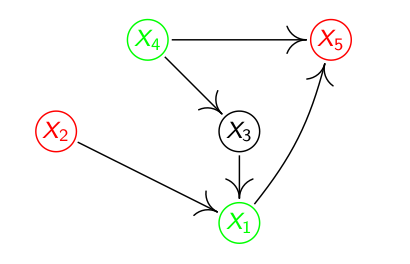
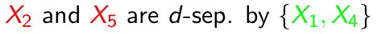
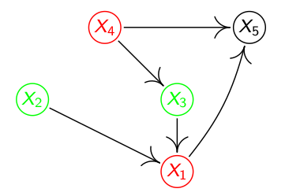
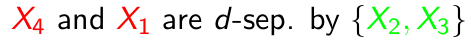
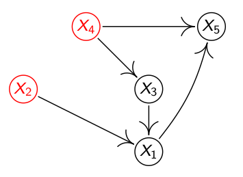
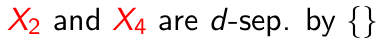
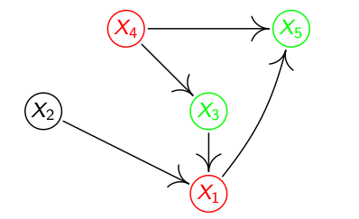
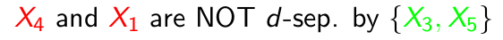

这篇介绍一个颇复杂的概念，d-separation，关于图和因果关系的一个小概念，逻辑有点绕。
关于这个概念的前因后果可以看这个链接：https://www.andrew.cmu.edu/user/scheines/tutor/d-sep.html。这里只描述概念本身。
d-separation和d-connection中的d是dependence的意思，指依赖性。如果两个变量或变量集X, Y可以被有向图中的一组变量Z d-separated，则X，Y在该图可以表达的所有概率分布以Z为独立条件。换句话说，就是一旦你了解了Z，那么你对X的了解就不会再给你任何多的有关Y的信息，那么X, Y则是基于Z独立的。
如果一条路径携带信息，或者存在依赖性，则认为这条路径是活的(active)。一个图中，变量X，Y可能经过多条路径相连，其中可能有路径是活的，也可能没有，如果有，那么X和Y则是d-connected。如果X和Y是d-separated, 那表示连接这两个变量的所有路径都不是活的。
怎么样的路径是活的呢？路径上的所有变量(点, 不包括首尾顶点)和路径(边)是活的。路径和路径上的变量是否是活的是基于一组变量的集合Z的。让我们先考虑Z为空的情况，两个变量A, B经过一个变量C有以下几种方式：
1) A –> C –> B 2) A <– C <– B 3) A <– C –> B
4) A –> C <– B
用因果逻辑来分析上面四个关系，1）A是B的间接因，2）B是A的间接因，3）C是A和B的共同因，4）C是A和B的共同果。前面三种关系都表示A，B存在关联(association)，或依赖性(dependence)，基于d-separation的理论，前面这三种有向路径都是活的。而第四种路径，A和B之间并无关联，所以第四种路径是死的(inactive)。所以当条件集Z是空时，只有能表达因果关系的路径才算活的。
之前说过，按d-separation理论，路径中所有的顶点和路径都是活的，该路径才是活的，上述示例中，C是A，B之间唯一的顶点，所以它在前三个路径中是活的，在第四个路径里是死的(无效的)。
这里引入一个新的概念，如果在图中有两个或以上的顶点是它的因，我们将一个顶点称之为碰撞体(collider)，反之则为非碰撞体(non-collider)。在上面四个示例中，前三个C都是非碰撞体，最后一个C为碰撞体。当条件集为空时，非碰撞体是活的顶点，传输信息(依赖关系)，碰撞体是死的，不传输信息(依赖关系)。
因此，当条件集为空，X和Y是否被条件集d-separated的可以转换成问题：X和Y之间是否存在不含碰撞体的路径。
现在考虑条件集不为空的情况。现在我们重新考虑上面四个路径，只是这次要解的问题是，A和B是否被C d-separated。C为条件集，我们要考虑的即，当C的值确定时，A和B之间是否会存在相关关系或者依赖关系。在头三条路径中，当条件集为空时，C是活的，那么现在C则是死的。即当C的值确定时，你再知道B的值，对解出A毫无帮助，反之亦然。Reichenbach称其为”Principle of the Common Cause”，Markov则形容它为，已知的当下分开了过去和未来，让未来不再依赖过去。
第四条路径中，C是碰撞体，因此在条件集为空时是无效的，现在则是有效的。我们可以这样来看这个问题，如果C的值被确定了，那么必然是A或者B或者它们两个同时造成C这样的结果，如果此时你知道A的值，发现C的结果不是A造成的，或不单单是A造成的，那么就可以推理出B多多少少造成了C现在这样的结果。所以获得A的信息的同时也获得了B的信息。这里有一个Pearl (1988)举的例子，如果一辆车无法发动，那么可能是引擎坏了或者油耗尽了，因此有下面的因果关系：
dead battery –> car won’t start <– no gas
如果你获得的信息是引擎是好的，那么这个信息对于推断有没有汽油是没有价值的。但是，如果告诉你车无法发动，但是引擎是好的，那么你是否可以推断，应该是没油了，这个时候，引擎是好的对于推断有没有汽油则是有价值，有信息量的。所以当确定了果，则与这个果关联的原本独立的因也关联了起来。
D-connection则可定义为：如果G是一个有向图，在图中X, Y和Z是三个没有交集的顶点的集合。当且仅当存在一条无向路径U，连接了集合X和Y中的某些结点，U中所有的碰撞体或者其后代在Z中，没有非碰撞体在Z中，则可称之为X和Y在G图中被Z d-connected。X和Y在G图中被Z d-separated当且仅当X和Y在G图中没有被Z d-connected。
接下来，看一个示例：


分析：有两条路径，2->1<-3<-4->5，4，3为非碰撞体，4在Z中，另一条路径2->1->5，1为非碰撞体，1在Z中，因此，结论成立。


分析：有两条路径，4->5<-1，5是碰撞体，5不在Z中，而4->3->1中3是非碰撞体，3在Z中，因此结论成立。


分析：有两条路径，4->5<-1<-2，5是碰撞体，1不是碰撞体，5不在Z中，而4->3->1<-2，1是碰撞体，1不在Z中，因此结论成立。


分析：有两条路径，4->5<-1，5是碰撞体，5在Z中，因此结论成立。
声明：所有图片均来自Jonas Peters的课件，没有原创图片。
参考：
[1] Jonas Peters, University of Copenhagen, Mini course on Causality, Laboratory for Information & Decision Systems (LIDS) and Models, Inference & Algorithms of the Broad Institute, MIT, 2017
[2] https://www.andrew.cmu.edu/user/scheines/tutor/d-sep.html
以下是[2]中的references, 做个备份 Blalock, H. (Ed.) (1971). Causal Models in the Social Sciences. Aldine-Atherton, Chicago.
Blalock, H. (1961). Causal Inferences in Nonexperimental Research. University of North Carolina Press, Chapel Hill, NC.
Costner, H. (1971). Theory, deduction and rules of correspondence. Causal Models in the Social Sciences, Blalock, H. (ed.). Aldine, Chicago.
Geiger, D. and Pearl, J. (1989b). Axioms and Algorithms for Inferences Involving Conditional Independence. Report CSD 890031, R-119-I, Cognitive Systems Laboratory, University of California, Los Angeles.
Geiger, D., Verma, T., and Pearl, J. (1990) Identifying independence in Bayesian Networks. Networks 20, 507-533.
Glymour, C., Scheines, R., Spirtes, P., and Kelly, K. (1987). Discovering Causal Structure. Academic Press, San Diego, CA.
Kiiveri, H. and Speed, T. (1982). Structural analysis of multivariate data: A review. Sociological Methodology, Leinhardt, S. (ed.). Jossey-Bass, San Francisco.
Pearl, J. (1988). Probabilistic Reasoning in Intelligent Systems. Morgan and Kaufman, San Mateo.
Pearl, J. (1995). Causal diagrams for empirical research. Biometrika, 82, pp. 669-710.
Pearl, J. and Dechter, R. (1989). Learning structure from data: A survey. Proceedings COLT ‘89, 30-244.
Pearl, J., Geiger, D. and Verma, T. (1990). The logic of influence diagrams. Influence Diagrams, Belief Nets and Decision Analysis. R. Oliver and J. Smith, editors. John Wiley & Sons Ltd.
Pearl, J. and Verma, T. (1991). A theory of inferred causation. Principles of Knowledge Representation and Reasoning: Proceedings of the Second International Conference, Morgan Kaufmann, San Mateo, CA.
Pearl, J. and Verma, T. (1990). A Formal Theory of Inductive Causation. Technical Report R-155, Cognitive Systems Labratory, Computer Science Dept. UCLA.
Pearl, J. and Verma, T. (1987). The Logic of Representing Dependencies by Directed Graphs. Report CSD 870004, R-79-II, University of California at Los Angeles Cognitive Systems Laboratory.
Richardson, T. (1994). Properties of Cyclic Graphical Models. MS Thesis, Carnegie Mellon University.
Richardson (1995). A Polynomial-Time Algorithm for Deciding Markov Equivalence of Directed Cyclic Graphical Models, Technical Report PHIL-63, Philosophy Department, Carnegie Mellon University.
Reichenbach, H. (1956). The Direction of Time. Univ. of California Press, Berkeley, CA.
Salmon, W. (1980). Probabilistic causality. Pacific Philosophical Quarterly 61, 50-74.
Spirtes, P. (1994a). “Conditional Independence in Directed Cyclic Graphical Models for Feedback.” Technical Report CMU-PHIL-54, Department of Philosophy, Carnegie Mellon University, Pittsburgh, PA.
Spirtes, P., Glymour, C., & Scheines, R. (1993). Causation, prediction, and search. Springer-Verlag Lecture Notes in Statistics 81,. Springer-Verlag, NY.
Spirtes, P., Richardson, T., Meek, C., Scheines, R., and Glymour, C. (1996). Using d-separation to calculate zero partial correlations in linear models with correlated errors. Technical Report CMU-PHIL-72, Dept. of Philosophy, Carnegie Mellon University, Pittsburgh, PA, 15213.
Suppes, P. (1970). A Probabilistic Theory of Causality. North-Holland, Amsterdam.


Comments